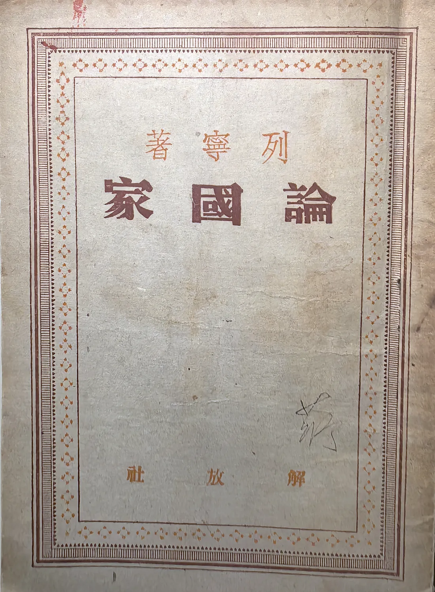
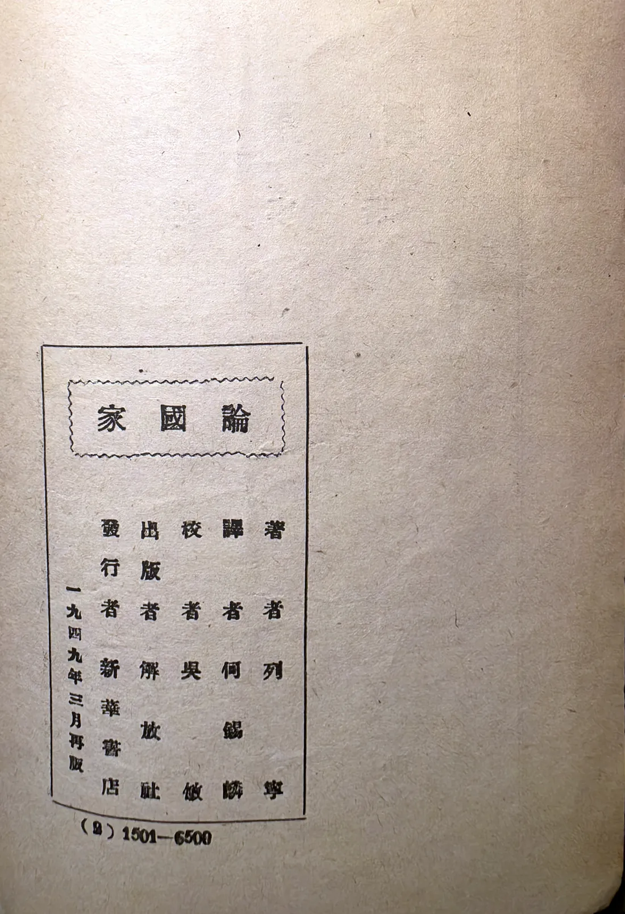
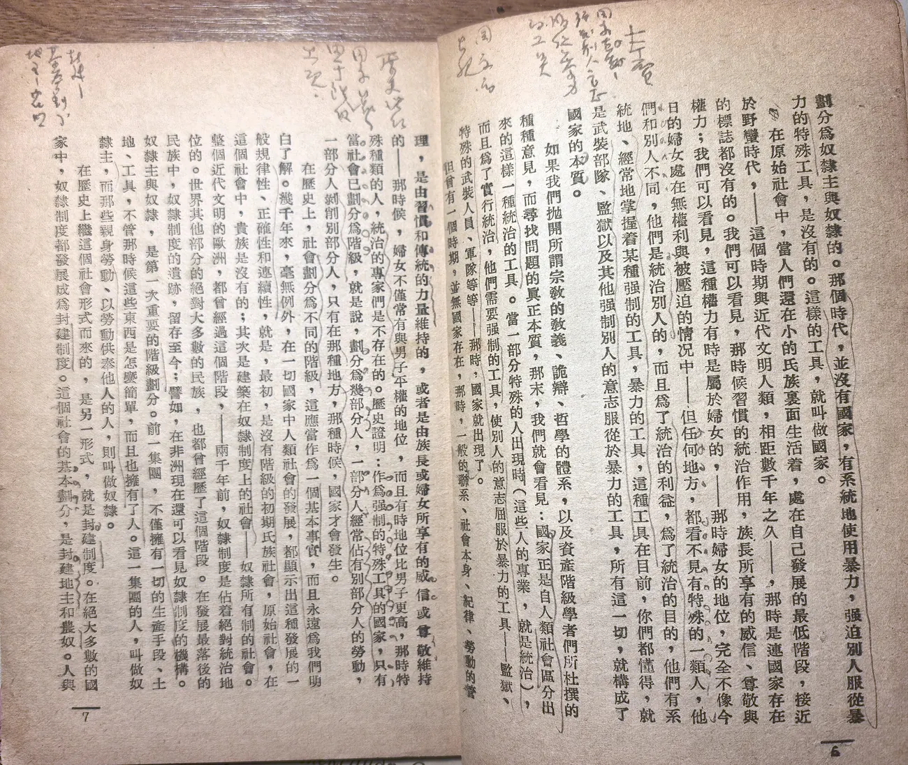
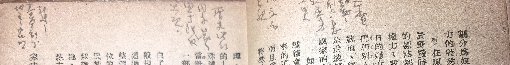
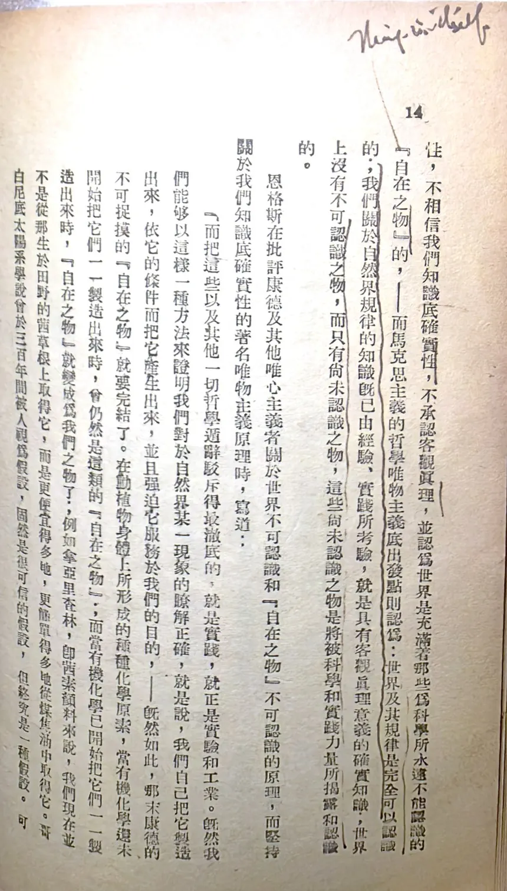
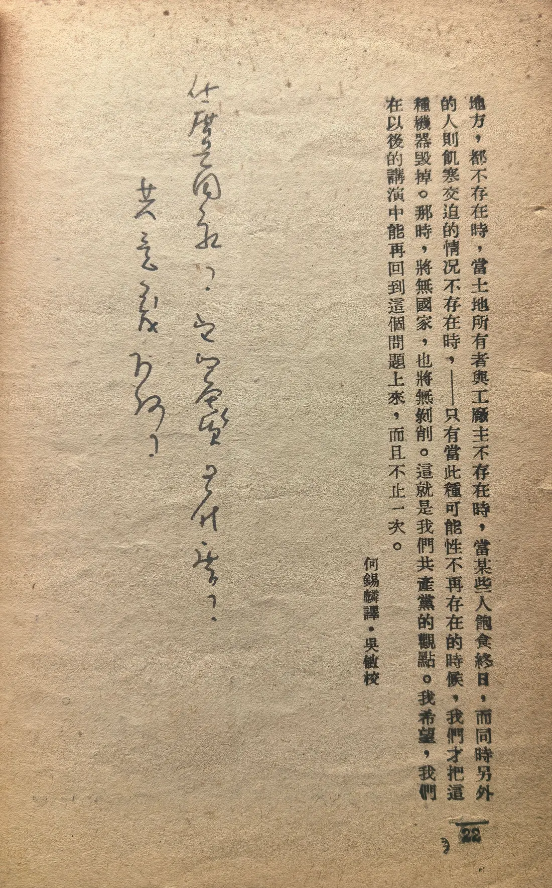

《论国家》
页面上端的字
二十二页，十二页有字。
《论国家》，解放社一九四九年三月再版，何锡麟译，吴敏校。薄薄一本，统共二十二页，薄得能卷起来。
二十二页里，有十二页留下了字——一半还多。字是钢笔写的，中文，竖排，都在页面的上端：有的密密的几行，挤得很紧；有的只有两三行。正文里另有划线，一句一句划过去。
这是一本竖排的小书，字排得密，行间没有落笔的地方。他的话，就全写在上头。读一页，记一页；记的不是原文，是自己的话。




第六、七页。点图可放大。
看这两页就够了：正文是印的，从纸边一路排到纸边；他写下的字，全在页面的最上头。
不是他挑了这个位置，是这本书只给了他这个位置。竖排的小书，字挨着字，行与行之间没有可落笔的缝；剩下的空白，只有天头那一条。
于是二十二页读下来，就有了二十二条窄窄的边——十二页上，边里写满了。
天头小字尚未逐字校录。此处先以原件示人：字迹、位置、密度，都是他读书的样子；转写稿待家族校订后补入。
另一本正相反。东北书店一九四八年十一月再版的《辩证唯物主义和历史唯物主义》，封面有他的签名。这一本上一个中文字也没有——批注只有两处，都是英文，添在天头上。划线倒是多：铅笔在字下划，长的划到底，短的只划半句。
其中一处，在讲「自在之物」的那一页：页边空白处，他写了一个英文词，Thing-in-itself。
书是中文的，字是英文的。一个教了二十年英文的人，读理论书也改不掉这个习惯——先弄懂，再在心里译一遍；译得过去，才算真懂。
两本书，两种读法。一本用中文记，边读边想，想到什么就写下来；一本一个中文字也不写，只在两处天头添了英文。同一双手，读两样的书，用两样的办法。


空白处，他用钢笔竖着写下三行，字是行草，一笔连着一笔：
什麼是國家？
它的本质是什么？
共產主義为何？
三个问句。读完了整本书，写下的不是结论，是问题。
书页上的字，是颜毓蘅自己跟自己说的话，
一句也不是给别人看的。